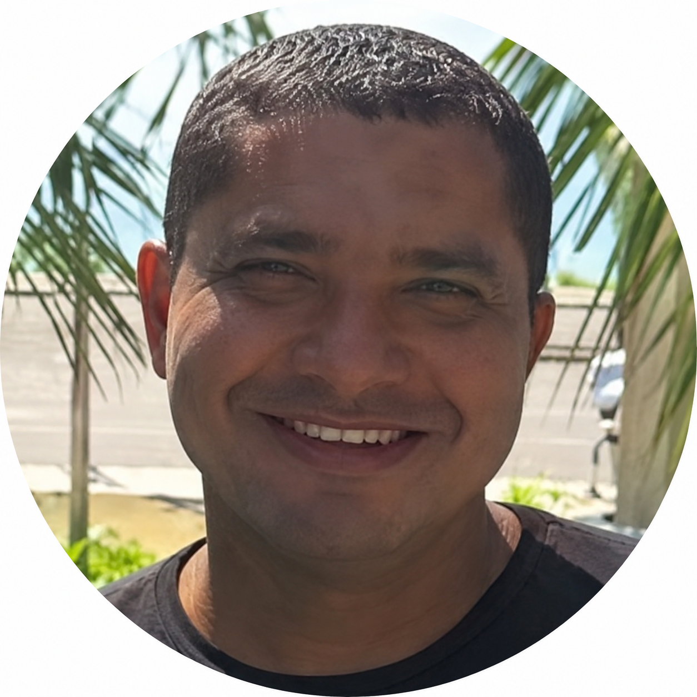
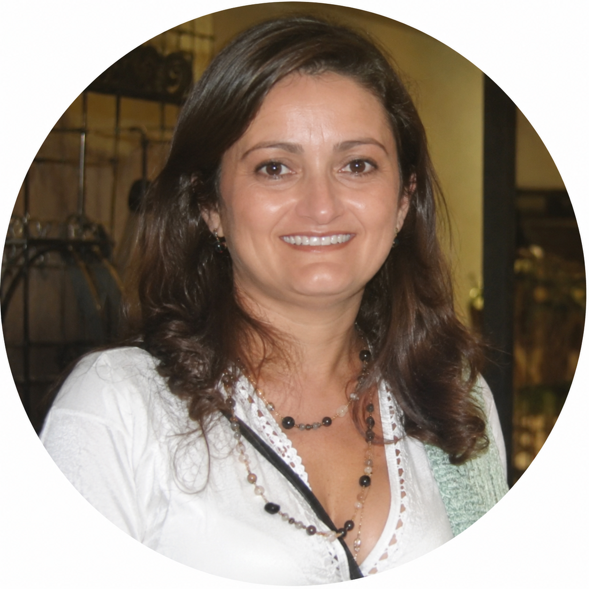

Seminários · Sertão de Dados
Encontros quinzenais do DataLab
Ciclo de seminários sobre Estatística, Ciência de Dados e Pesquisa Operacional. Realizados a cada 15 dias na Sala de Seminários do bloco 952.
Próximos seminários
Nenhum seminário agendado no momento. Volte em breve para conferir a próxima data do ciclo Sertão de Dados.
Seminários anteriores
Advances in Bayesian parametric and semi-parametric modeling of complex longitudinal data
Profa. Carina Brunehilde

Aprimorando uma matherística para o PDLCR
Prof. Jesus Ossian da Cunha Silva
Modelagem Inteligente da Moagem de Cimento: Aplicação de Aprendizado de Máquina para Previsão e Otimização das Variáveis Críticas visando Eficiência Energética, Qualidade e Sustentabilidade
Profa. Rosineide Fernando da Paz

Overdispersion models for clustered toxicological data in a bioassay of entomopathogenic fungus
Profa. Sílvia Maria de Freitas
Análise de Dados Psicométricos no Contexto de Avaliações Educacionais
Prof. José Roberto Silva dos Santos
Previsão de Curto Prazo da Geração Eólica no Ceará: ML e Dados Públicos
Prof. Luis Gustavo Bastos Pinho
Detectar para Corrigir: Monitoramento de Processos via Estatísticas de Ordem
Prof. Gualberto Segundo Agamez Montalvo